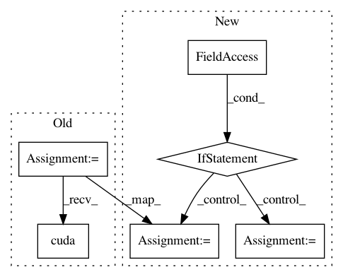

9108041562e1b7a4fb159a8c0afe0caf54fe2a6d,snli/train.py,,,#,16
Before Change
if config.birnn:
config.n_cells *= 2
model = SNLIClassifier(config)
if args.word_vectors:
model.embed.weight.data = inputs.vocab.vectors
model.cuda()
criterion = nn.CrossEntropyLoss()
opt = O.Adam(model.parameters(), lr=args.lr)
iterations = 0
After Change
if config.birnn:
config.n_cells *= 2
if args.resume_snapshot:
model = torch.load(args.resume_snapshot, map_location=lambda storage, locatoin: storage.cuda(args.gpu))
else:
model = SNLIClassifier(config)
if args.word_vectors:
model.embed.weight.data = inputs.vocab.vectors
model.cuda(args.gpu)
criterion = nn.CrossEntropyLoss()
opt = O.Adam(model.parameters(), lr=args.lr)
iterations = 0
In pattern: SUPERPATTERN
Frequency: 3
Non-data size: 6
Instances
Project Name: OpenNMT/OpenNMT-py
Commit Name: 9108041562e1b7a4fb159a8c0afe0caf54fe2a6d
Time: 2017-02-06
Author: bryan.mccann.is@gmail.com
File Name: snli/train.py
Class Name:
Method Name:
Project Name: OpenNMT/OpenNMT-py
Commit Name: d88d3777c2b5c8c6471720252bca4c1987e6366e
Time: 2017-02-22
Author: alerer@fb.com
File Name: OpenNMT/onmt/Dataset.py
Class Name: Dataset
Method Name: __getitem__
Project Name: OpenNMT/OpenNMT-py
Commit Name: c751a1dd8a724388437916e9d29653c45fc4f14f
Time: 2017-02-22
Author: alerer@fb.com
File Name: onmt/Dataset.py
Class Name: Dataset
Method Name: __getitem__